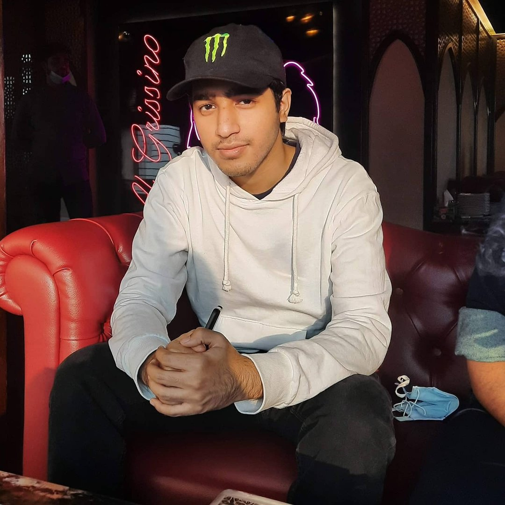

Profile
- Name : Syed Saleh Mohammad Sajid
- Sex : Male
- Age : 20 y/o
- Date of Birth: 27th January, 2002
- Nationality : Bangladeshi
- Address : House 13, Road 5, Sector 12 Uttara Model Town, Dhaka
Family
- Father’s Name : Dr. Syed Humayun Kabir
- Mother’s name : Noorjahan Morshad
Hobbies
- ▸ Drawing and Sketching fictional characters
- ▸ Exercising
- ▸ Football.
Interests
- ▸ Going on long trips
- ▸ Playing Games
- ▸ Listening to music
- ▸ Watching TV shows and Anime
A dedicated person studying Computer Science and Engineering with the aim to accomplish many things in future and pave the way for innovation.
Information
Activities
- ▸ BRAC University Computer Club
- ▸ BRAC University Robotics Club
Educational Qualifications
- Bachelor of Science. (2020-Ongoing)
Computer Science and Engineering, Brac University.
- GCE A Level. (2020)
School: Playpen School
- GCE O level. (2018)
School: Playpen School
“Go head and live with your head held high”
- Kyojiro Rengoku